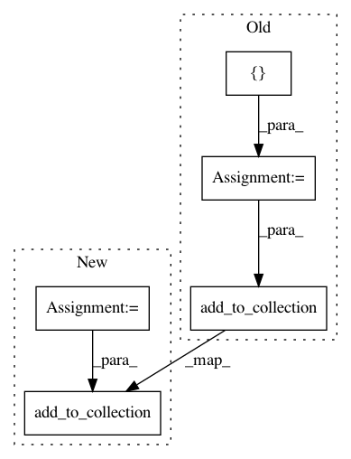

f9b98760f445fc0219cfc9c4cada2b5f9d35ab1b,basic/model.py,Model,_build_loss,#Model#,219
Before Change
if config.wy:
if config.na:
na = tf.reshape(self.na, [-1, 1])
concat_y = tf.concat(1, [na, tf.reshape(self.wy, [-1, M * JX])])
losses = tf.nn.softmax_cross_entropy_with_logits(self.concat_logits, tf.cast(concat_y, "float"))
else:
losses = tf.nn.softmax_cross_entropy_with_logits(
self.logits2, tf.cast(tf.reshape(self.wy, [-1, M * JX]), "float"))
ce_loss = tf.reduce_mean(loss_mask * losses)
tf.add_to_collection("losses", ce_loss)
else:
if config.na:
na = tf.reshape(self.na, [-1, 1])
After Change
damp_ratio = num_pos / num_neg
dampened_losses = losses * (
(tf.cast(self.x_mask, "float") - tf.cast(self.wy, "float")) * damp_ratio + tf.cast(self.wy, "float"))
new_losses = tf.reduce_sum(dampened_losses, [1, 2])
ce_loss = tf.reduce_mean(loss_mask * new_losses)
if config.na:
na = tf.reshape(self.na, [-1, 1])
concat_y = tf.concat(1, [na, tf.reshape(self.wy, [-1, M * JX])])
losses = tf.nn.softmax_cross_entropy_with_logits(
self.concat_logits, tf.cast(concat_y, "float") / tf.reduce_sum(tf.cast(self.wy, "float")))
else:
losses = tf.nn.softmax_cross_entropy_with_logits(
self.logits2, tf.cast(tf.reshape(self.wy, [-1, M * JX]), "float") / tf.reduce_sum(tf.cast(self.wy, "float")))
ce_loss = tf.reduce_mean(loss_mask * losses)
tf.add_to_collection("losses", ce_loss)
else:
if config.na:
na = tf.reshape(self.na, [-1, 1])
In pattern: SUPERPATTERN
Frequency: 4
Non-data size: 5
Instances
Project Name: wenwei202/iss-rnns
Commit Name: f9b98760f445fc0219cfc9c4cada2b5f9d35ab1b
Time: 2017-01-24
Author: seominjoon@gmail.com
File Name: basic/model.py
Class Name: Model
Method Name: _build_loss
Project Name: wenwei202/iss-rnns
Commit Name: d41aa4d2c995796e3978a83052515572f402fa5f
Time: 2017-01-21
Author: seominjoon@gmail.com
File Name: basic/model.py
Class Name: Model
Method Name: _build_loss
Project Name: NifTK/NiftyNet
Commit Name: c5a2908de1cf2285775721008520d7b60bdbc9ca
Time: 2017-12-23
Author: wenqi.li@ucl.ac.uk
File Name: niftynet/application/label_driven_registration.py
Class Name: RegApp
Method Name: connect_data_and_network
Project Name: NifTK/NiftyNet
Commit Name: 369afab10deee16ef572c738df083d2e74863e64
Time: 2017-08-27
Author: wenqi.li@ucl.ac.uk
File Name: niftynet/application/toy_application.py
Class Name: ToyApplication
Method Name: connect_data_and_network